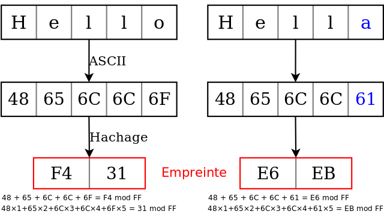

TP2-PROG-03 : Algorithme de Luhn (carte de crédit)
Contents
TP2-PROG-03 : Algorithme de Luhn (carte de crédit)#
Objectifs pédagogiques#
comprendre ce qu’est une somme de contrôle (checksum)
connaître le système de codage des numéros de carte de crédit
mettre en oeuvre un système de somme de contrôle à l’aide de l’algorithme de Luhn
implémenter l’algorithme de Luhn en Python
vérifier la validité de sa carte de crédit
Somme de contrôle (checksum)#
Lorsqu’un émetteur envoie un message à un récepteur, il se peut que la voie de communication ne soit pas entièrement fiable. Cela signifie que le message reçu a pu être altéré et qu’il n’est plus exactement identique au message original envoyé.
La somme de contrôle (checksum en anglais) permet de détecter une erreur mais pas de la corriger.
 (Source : Wikipedia)
Dans l’exemple ci-dessus, on convertit les caractères en hexadécimal en suivant la table ASCII. la somme des éléments est ensuite calculée, c’est ce que l’on appelle le hachage et se réduit à une valeur de contrôle : la somme de contrôle. Lorsqu’une lettre change (par exemple le o final devient a), la somme de contrôle change : une erreur est détectée.
On remarque qu’il n’est pas possible avec la somme de contrôle de réparer l’erreur : le récepteur demande à l’émetteur de lui renvoyer le message. Il existe d’autres algorithmes de contrôle qui permettent de détecter ET de corriger l’erreur : ce sont les algorithmes dits de code cycliques. Ces algorithmes dépassent le cadre de ce cours.
Numéro d’une carte de crédit#
Toute carte de crédit est formée de 16 chiffres compris entre \(0_{10}\) et \(9_{10}\) (sauf le premier) :

Chiffre |
Signification |
|---|---|
1 |
MII (Major Industry Identifier) : 3 : American Express, 4 : Visa, 5 : Mastercard |
de 1 à 6 |
IIN (Issuer Identification Number) |
de 7 à 15 |
Numéro de compte |
16 |
CODE DE CONTRÔLE |
On note que les chiffres de 7 à 15 qui représentent le numéro de compte permettent de coder \(10^9\) comptes différents, soit un milliard.
Le CODE DE CONTRÒLE est le sujet de ce TP
Calcul du code de contrôle#
L’algorithme pour calculer le dernier chiffre de la carte de crédit se déroule en trois étapes :
On multiplie par deux un chiffre sur deux en commençant par l’avant-dernier (le 15ème) et en se déplaçant de droite à gauche. Si le double du chiffre dépasse 9 (par exemple \(2 \times 8 = 16\), alors on soustrait 9 au double
On additionne l’ensemble des 15 chiffres trouvés (ceux qui ont été doublés, et ceux qui n’ont pas été doublés)
Si le résultat modulo 10 est égal à zéro, alors le numéro de carte de crédit est valide.
Exercice 1#
Dessinez l’algorigramme d’un algorithme permettant la vérification de la validité d’un numéro de carte de crédit
Vous pouvez vous aider de la feuille de triche
Exercice 2#
Ecrire un programme qui implémente l’algorithme de Luhn et vérifie la validité d’un numéro de carte de crédit donné
Traduisez votre algorigramme en Python !
Testez votre programme avec les numéros de carte de crédit suivants :
code invalide :
[5,6,3,5,4,0,0,2,9,5,6,1,3,4,1,1]code valide :
[4,3,9,6,8,3,7,4,1,2,0,4,2,7,5,5]code invalide :
[4,6,2,4,7,4,8,2,3,3,2,4,9,0,8,0]
Exercice 3#
Sur la base de ce programme, écrire un nouveau programme qui génère un numéro de carte de crédit valide quelconque